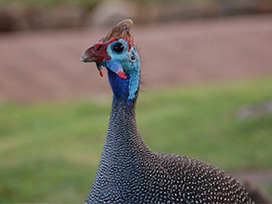
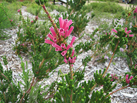

- 

- 
Set against the eastern slopes of Table Mountain, Kirstenbosch National Botanical Gardens was established nearly 100 years ago to conserve and promote the diverse indigenous flora of South Africa.
Kirstenbosch covers 26 hectares, and falls within the Cape Floristic Region, declared a UNESCO World Heritage Site in 2004. With over 7 000 plant species, interspersed with rolling green lawns, the Garden makes for beautiful and relaxed setting, just 15 minutes from Cape Town's CBD.
PLEASE NOTE: At the intersection of Coen Steytler & Buitengracht – Turn right (from the N1) into Coen Steytler towards